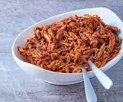

Pulled Pork

Description
This North Carolina pulled pork recipe is delicious, especially when smoked with hickory chips on a charcoal grill.
A spicy rub and a zesty vinegar sauce turn this pork into a favorite dish.
Ingredients
- 1 tablespoon mild paprika
- 2 teaspoons light brown sugar
- 1 ½ teaspoons hot paprika
- ½ teaspoon celery salt
- ½ teaspoon garlic salt
- ½ teaspoon dry mustard
- ½ teaspoon ground black pepper
- ½ teaspoon onion powder
- ¼ teaspoon salt
- 8 pounds pork butt roast
- 2 cups cider vinegar
- 1 ⅓ cups water
- ⅝ cup ketchup
- ¼ cup firmly packed brown sugar
- 5 teaspoons salt
- 4 teaspoons crushed red pepper flakes
- 1 teaspoon ground black pepper
- 1 teaspoon ground white pepper
- 2 pounds hickory wood chips, soaked
Steps
- In a small bowl, mix mild paprika, light brown sugar, hot paprika, celery salt, garlic salt, dry mustard, ground black pepper, onion powder, and salt. Rub spice mixture into the roast on all sides. Wrap in plastic wrap, and refrigerate, 8 hours, or overnight.
- Prepare a grill for indirect heat.
- Sprinkle a handful of soaked wood over coals, or place in the smoker box of a gas grill. Place pork butt roast on the grate over a drip pan. Cover grill, and cook pork until pork is tender and shreds easily, about 6 hours. Check hourly, adding fresh coals and hickory chips as necessary to maintain heat and smoke.
- Remove pork from heat and place on a cutting board. Allow the meat to cool, approximately 15 minutes, then shred into bite-sized pieces using two forks. This requires patience.
- In a medium bowl, whisk together cider vinegar, water, ketchup, brown sugar, salt, red pepper flakes, black pepper, and white pepper. Continue whisking until brown sugar and salt have dissolved. Place shredded pork and vinegar sauce in a large roasting pan, and stir to coat pork. Serve immediately, or cover and keep warm on the grill for up to 1 hour until serving.